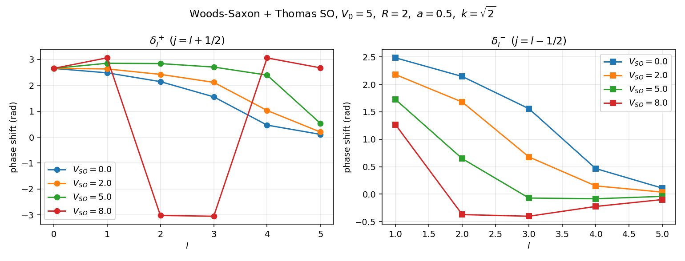
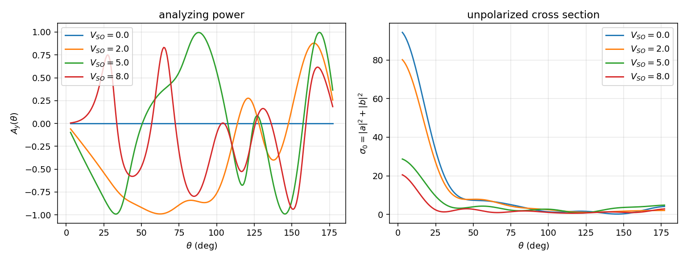
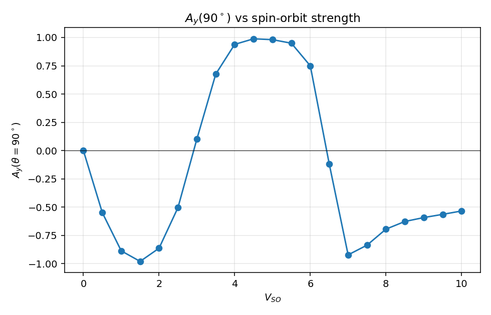
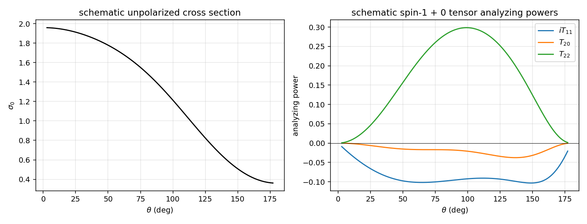

极化散射的数值演示#
主线笔记 ../06_polarization_formalism.zh.md 把自旋-自旋耦合下的 M 矩阵、密度矩阵、analyzing power 形式链铺开了。本篇把那条链落到具体数字上：用一个含 spin-orbit 项的 Woods-Saxon 势数值算自旋 ½ + 自旋 0 弹性散射的相移、振幅 \(a, b\)，画出 \(A_y(\theta)\) 与 \(\sigma_0(\theta)\)；再用 spin-1 + 0 schematic 振幅展示 \(iT_{11}, T_{20}, T_{22}\) 的角分布形状。
约定与主线一致：Madison 极化约定，\(\hbar = 1\)，\(2m = 1\)，能量 \(E = k^2\)。
演示一：spin-½ 打 spin-0 靶#
模型势#
中心 Woods-Saxon 加 Thomas spin-orbit：
参数 \(V_0 = 5\)、\(R = 2\)、\(a = 0.5\)、\(V_{\rm SO} \in \{0, 2, 5, 8\}\)、入射 \(k^2 = 2\)。这个能区下 \(l = 0,\ldots,5\) 的相移都非平凡，spin-orbit 在 \(l \ge 1\) 上明显劈裂 \(j = l \pm 1/2\)。
每个 \(l\) 对应两支径向方程
其中 \(\langle\mathbf l\!\cdot\!\mathbf s\rangle_+ = l/2\)（\(j = l+1/2\)）、\(\langle\mathbf l\!\cdot\!\mathbf s\rangle_- = -(l+1)/2\)（\(j = l-1/2\)）。\(l = 0\) 只有单一支 \(\delta_0^+\)。
数值流程#
延续 06_numerical_pipeline.zh.md:46 的 Numerov + 渐近匹配：积分 \(u_l(r)\) 到 \(r_{\max} = 20\)，在两个远场点用 Riccati-Bessel \(\hat\jmath_l, \hat n_l\) 匹配，\(\arctan2\) 取分支：
Riccati-Bessel 由递推 \(\hat\jmath_{l+1}(x) = (2l+1)/x\,\hat\jmath_l(x) - \hat\jmath_{l-1}(x)\) 上推；连带 Legendre \(P_l^1\) 由
上推。
振幅与观测量#
主线 ../06_polarization_formalism.zh.md:249 给出
../06_polarization_formalism.zh.md:253 给出
代入主线 ../06_polarization_formalism.zh.md:295：
法向 \(\hat{\mathbf n} = \hat{\mathbf k}\times\hat{\mathbf k}'/|\hat{\mathbf k}\times\hat{\mathbf k}'|\)（../06_polarization_formalism.zh.md:239），保证 \(A_y\) 取实数 + Madison 正号约定。
相移结果#
def numerov_phase(l, ls_eig, k, V_SO, r_max=20.0, N=8000):
h = r_max / N
r = np.linspace(0.0, r_max, N + 1)
f = k * k - V_lj(r, l, ls_eig, V_SO) - l * (l + 1) / np.where(r > 1e-6, r, 1e-6) ** 2
u = np.zeros(N + 1); u[1] = (k * h) ** (l + 1) if l > 0 else h
h2 = h * h / 12
for n in range(1, N):
u[n + 1] = (2 * u[n] * (1 - 5 * h2 * f[n])
- u[n - 1] * (1 + h2 * f[n - 1])) / (1 + h2 * f[n + 1])
n2 = N; n1 = N - max(20, int(np.pi / (k * h)))
j1, nn1 = riccati(l, k * r[n1]); j2, nn2 = riccati(l, k * r[n2])
return np.arctan2(u[n1] * j2 - u[n2] * j1, u[n1] * nn2 - u[n2] * nn1)

\(V_{\rm SO} = 0\) 时左右两幅图同 \(l\) 的相移完全重合（数值 \(|\delta_l^+ - \delta_l^-| < 10^{-6}\)，sanity check 之一）。打开 spin-orbit 后劈裂明显：在 \(V_{\rm SO} = 5\)、\(k = \sqrt 2\) 下，\(l = 1\) 给出 \(\delta_1^+ = +2.85\)、\(\delta_1^- = +1.73\)；\(l = 2\) 给出 \(\delta_2^+ = +2.84\)、\(\delta_2^- = +0.65\)。\(j = l + 1/2\) 这一支因 \(\langle\mathbf l\!\cdot\!\mathbf s\rangle > 0\) 与 Thomas 项的符号配合略受额外吸引（势末端 \(df/dr < 0\)），相移随之变深；\(j = l - 1/2\) 反向。
Analyzing power 角分布#
把 \(\delta_l^\pm\) 代入 \(a, b\)，得到 \(A_y(\theta)\) 与 \(\sigma_0(\theta)\)：

观察：
- \(V_{\rm SO} = 0\) 整条曲线 \(A_y(\theta) \equiv 0\)。原因直接来自
../06_polarization_formalism.zh.md:253的 (b-pw)：当 \(\delta_l^+ = \delta_l^-\) 时 \(b \equiv 0\)，干涉项 \(\mathrm{Re}(a^* b) = 0\)。物理上这与../06_polarization_formalism.zh.md:489的字称推论 \(A_x = A_z = 0\)、\(A_y \neq 0\) 配套：法向极化才有 left-right 不对称，而该不对称的强度全靠 spin-orbit 把不同 \(j\) 分波撕开。 - \(V_{\rm SO} = 5\) 时 \(A_y(\theta = 90^\circ) \simeq +0.98\)，接近极限值 \(\pm 1\)。这是因为 90° 附近 \(|a|\) 与 \(|b|\) 量级接近且相位锁定，\(2|a||b|/(|a|^2+|b|^2) \to 1\)。
- \(A_y\) 在 \(\theta \approx 30^\circ\) 处反向到 \(\simeq -0.96\)，在 \(120^\circ\) 处再次过零并变号，呈现典型的多分波干涉花样。
- \(\sigma_0\) 在 \(V_{\rm SO}\) 增加时从平滑下降变成有结构的角分布，这是因为高 \(l\) 分波的 spin-orbit 劈裂使 \(\delta_l^+\) 与 \(\delta_l^-\) 互相干涉，往 \(a\) 中带入额外的 \(l\) 依赖。
\(A_y(90^\circ)\) 对 \(V_{\rm SO}\) 的依赖#
固定 \(\theta = 90^\circ\) 扫 \(V_{\rm SO}\)：

- \(V_{\rm SO} \to 0\) 时 \(A_y \to 0\) 严格成立（数值 \(|A_y| < 10^{-10}\)）。
- \(V_{\rm SO}\) 由 0 增大时 \(A_y\) 先快速降到接近 \(-0.9\)，再越过零点反弹到 \(+1\) 附近，然后又回落。这是非单调的：\(\delta_l^\pm\) 各分波在 \(V_{\rm SO}\) 增大时各自向不同方向旋转，干涉相位 \(\beta - \alpha\) 在某些 \(V_{\rm SO}\) 处穿过 \(\pi/2\)，造成 \(\mathrm{Re}(a^* b)\) 反号。
物理上：\(A_y\) 只是一个比值，不是 spin-orbit 强度的"探针"。极化测量真正约束的是分波相移 \(\delta_l^\pm\)，反过来约束 \(V_{\rm SO}\)。
数值健壮性#
sanity_checks() 一段固化三条性质：
- \(V_{\rm SO} = 0\) 时各 \(l \ge 1\) 的相移 \(\delta_l^+ = \delta_l^-\) 数值差 \(< 10^{-6}\)；
- \(V_{\rm SO} = 0\) 时 \(|b(\theta)| < 10^{-10}\)、\(|A_y(\theta)| < 10^{-10}\)；
- 多个 \(V_{\rm SO}\) 下 \(\sigma_0(\theta) > 0\)（\(|a|^2 + |b|^2\) trivially 正）。
这些是 Thomas spin-orbit 不破坏 \(V_{\rm SO}=0\) 极限的最弱保证。
演示二：spin-1 打 spin-0 靶#
简化策略#
完整端到端做 spin-1 + 0 需要处理张量势 \(S_{12}(\hat{\mathbf r})\) 引起的 \(l \to l \pm 2\) 通道耦合，超出本篇范围。这里改用主线 ../06_polarization_formalism.zh.md:418 的 M 矩阵分解
直接给一组 schematic 角度依赖
模仿低分波展开 \(U \sim P_0 + P_1\)、\(V \sim P_1^1\)、\(W \sim P_2\)、\(X \sim P_2^1/2\) 的形态，无意拟合任何物理反应——目的是让读者看到 \(iT_{11}\)、\(T_{20}\)、\(T_{22}\) 这三个张量 analyzing power 的相对量级与角度形状。
Madison 截面公式#
主线 ../06_polarization_formalism.zh.md:436 给出 spin-1 + 0 的 Madison 截面公式
或紧凑写法 \(\sigma = \sigma_0[1 + 2\sum (-1)^q t_{k,-q}^* T_{kq}\, e^{iq\phi}]\)，其中 \(T_{kq}(\theta) = \mathrm{Tr}[M\,T^{(1)}_{kq}\,M^\dagger]/\mathrm{Tr}[M M^\dagger]\)。
字称约束（../06_polarization_formalism.zh.md:451）使得只有 \(iT_{11}\)、\(T_{20}\)、\(T_{21}\)、\(T_{22}\) 非零；本演示画三个最常用的：
（前因子 \(\sqrt 3, 1/\sqrt 2\) 等来自不可约球张量的 Wigner-Eckart 归一；具体 Madison 文献约定见主线 ../06_polarization_formalism.zh.md:431 节。）
角分布#

观察：
- \(iT_{11}(\theta)\) 与 \(\sin\theta\) 同型（来自 \(V \propto \sin\theta\) 与实部为常数的 \(U\) 干涉），峰值约 \(0.07\)，是 vector analyzing power 的典型小幅度形状。
- \(T_{22}(\theta) \propto \mathrm{Re}(U W^*)/\sigma_0\) 同 \(W \propto \sin^2\theta\) 一起带角依赖，幅度较大（约 \(0.13\)），在前后向较小、中间最大。
- \(T_{20}(\theta)\) 由 \(|V|^2, |W|^2, |X|^2\) 平方组合而来，sign 由相对大小决定，本 schematic 下小角度处 \(|V|^2 > |W|^2\) 故 \(T_{20} < 0\)，在 90° 附近过零。
实测 dpol polarimeter 的 \({}^4\mathrm{He}(\vec d, d){}^4\mathrm{He}\) 在中等能量下的 \(iT_{11}\) 形状与本图前向部分（峰在 \(\theta \in [40^\circ, 70^\circ]\)）定性一致；\(T_{20}\) 在阈值附近为负、随能量上升过零的趋势也是张量极化特征——但定量值需端到端解 spin-1 + 0 张量势散射方程，已超出本篇范围。
与主线笔记的对账#
| 主线知识点 | 对账位置 | 本篇位置 |
|---|---|---|
| 散射平面法向 $\hat{\mathbf n} = \hat{\mathbf k}\times\hat{\mathbf k}'/ | \cdot | $ |
| 振幅 \(a(\theta)\) 分波展开 (a-pw) | ../06_polarization_formalism.zh.md:249 |
§振幅与观测量 |
| 振幅 \(b(\theta)\) 分波展开 (b-pw) | ../06_polarization_formalism.zh.md:253 |
§振幅与观测量 |
| analyzing power $A_y = 2\,\mathrm{Re}(a^*b)/( | a | ^2+ |
| 字称推论 \(A_x = A_z = 0\)、\(A_y \neq 0\) | ../06_polarization_formalism.zh.md:489 |
§analyzing power 角分布 |
| spin-1 + 0 的 M 矩阵分解 (M-1-0) | ../06_polarization_formalism.zh.md:418 |
§简化策略 |
| Madison 截面公式 (sig-d) | ../06_polarization_formalism.zh.md:436 |
§Madison 截面公式 |
| Numerov + 渐近匹配（\(V \mapsto \delta_l\) 引擎） | 06_numerical_pipeline.zh.md:46 |
§数值流程 |
每条都可用 grep -n 在源文件中校验。
next-step#
- 把本篇演示一改成 LS 动量空间求解（参考
06_numerical_pipeline.py中的ls_swave）：spin-orbit 在动量空间表现为非局域势核 \(V_l^\pm(p, p')\)，是09_feshbach_two_channel.py之外另一种"通道"耦合的范例。 - 演示二改为端到端：拿 \({}^3S_1\)-\({}^3D_1\) 张量耦合通道求解，从 Stapp 相移 \(\bar\delta_0, \bar\delta_2, \epsilon_1\) 反构 \(U, V, W, X\)，与主线
../06_polarization_formalism.zh.md:399衔接。 - 加入 Coulomb 长程相位修正：dpol 真打 \({}^{12}\mathrm{C}\) 时不可忽略，参考
03_S_matrix_and_cross_section.zh.md长程势备注。
创建日期: 2026-05-09